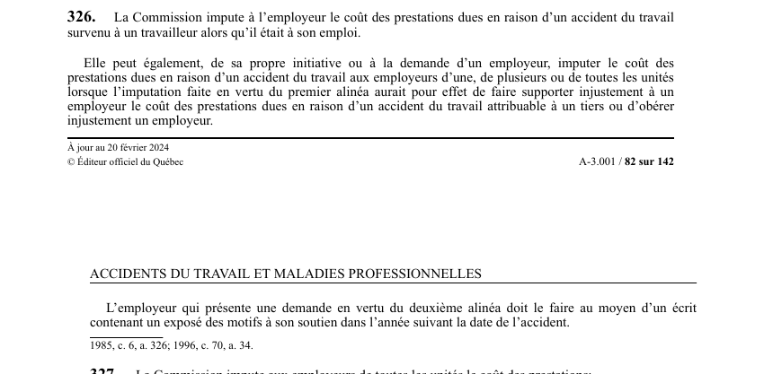

art-326-LATMP : imputation employeur
Un article du wiki ⚖️ Recueil législatif
🌐 LegisQuébec · 📄 PDF officiel (page 82)
Texte officiel : capture du PDF

🔗 Ouvrir a cette page : LATMP.pdf : page 82 · texte a jour au 20 février 2024
En bref
Imputation employeur. Cette obligation vise le travailleur et la CNESST.
Jurisprudence
Décisions du recueil citant cet article (PDF intégré sur chaque fiche) :
Jurisprudence
- Collège Mont-Sacré-Cœur de Granby CLP 578832 (2015 QCCLP 6452)
- PLGB Transport inc. et Outils Snap-On du Canada ltée (2020 QCTAT 2079) (2020 QCTAT 2079)
Voir aussi
Pages qui pointent ici (18)
- 🎯 Démarrage rapide - Direction et RH Droit du travail
- art-325-LATMP, imputation Recueil législatif
- art-38-LATMP, employeur a droit accès Recueil législatif
- Collège Mont-Sacré-Cœur de Granby CLP 578832 Recueil législatif
- Cotisations et financement CNESST Droit du travail
- Démarche en cas de lésion Droit du travail
- Démarrage rapide - Direction et RH Recueil législatif
- Index des décisions (table de travail) Recueil législatif
- Index par profil Recueil législatif
- Index thématique des décisions Recueil législatif
- LATMP Recueil législatif
- LATMP - Chapitre IX - Imputation et financement Recueil législatif
- Mécanismes LMRSST Droit du travail
- PDFs Recueil législatif
- PLGB Transport inc. et Outils Snap-On du Canada ltée (2020 QCTAT 2079) Recueil législatif
- Réclamation employeur Droit du travail
- Régime CNESST Droit du travail
- Tarification CNESST Droit du travail